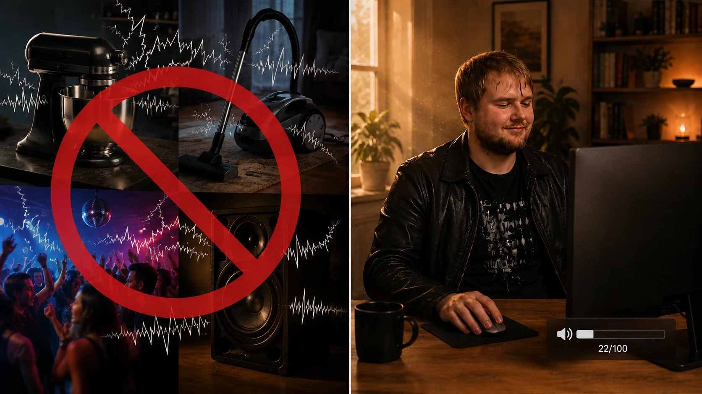

Il mio approccio: cosa ho fatto concretamente contro l'acufene cronico?
Ultimo aggiornamento: giugno 2026
Quello che leggi qui è il mio percorso personale. Per domande mediche o dubbi sulla tua salute rivolgiti a un medico di tua fiducia. Chi mette in pratica gli approcci descritti qui lo fa sotto la propria responsabilità.
Ok, cosa ho fatto concretamente all'epoca contro il mio acufene cronico?
«Aspetta e ignora il suono»: con me non ha funzionato. Così sono arrivato a una decisione: dovevo fare ancora di più. Perché sia andata così lo puoi leggere nella mia storia in breve.
Per il mio approccio questo voleva dire che dovevo fare tre cose esattamente nello stesso momento:
- Abbassare il carico di lavoro meccanico – evitare il più possibile i picchi di rumore e il rumore cronico, in modo che le pompe ioniche, già sotto sforzo pesante, non vengano sovraccaricate ancora di più.
- Spingere al massimo la produzione di energia cellulare (ATP) – perché senza un surplus di energia la riparazione vera e propria (inserire nuovi crosslinker, rimettere in piedi l'impalcatura delle ciglia sensoriali) non parte nemmeno. Altrimenti la cellula resta intrappolata nella ruota del criceto, come ho descritto nella mia pagina sull'acufene da trauma acustico.
- Fornire il materiale da costruzione giusto – cioè esattamente i mattoni con cui la cellula può costruire nuovi crosslinker e nuove strutture di actina, per rincollare bene il ciuffo danneggiato.
Ecco la sequenza esatta che nel mio caso ha ribaltato la situazione:
Sintesi Da leggere in 60 secondi – le tre strade a colpo d'occhio
Tre tipi di acufene, tre leve diverse. Con l'acufene da trauma acustico la mia strada è stata una combinazione di dieta acustica, fasi di sonno profondo spinte al massimo e un protocollo di nutrienti portato avanti con costanza (vitamine del gruppo B, niacina, Q10, omega-3, lecitina, minerali, melatonina) che fa salire la produzione di ATP – così la cellula esce dalla ruota del criceto e può inserire nuovi crosslinker. Dopo tre o quattro mesi il mio acufene era sparito. Con l'acufene da stress la mia strada sarebbe il lavoro sui conflitti secondo Michael Prgomet: trovare i campi di tensione attivi con il test muscolare kinesiologico, «ancorare» le emozioni immagazzinate per una durata testata e lasciare che la guarigione vera e propria avvenga di notte, nell'elaborazione onirica. Con l'acufene da tossine e farmaci la leva più importante è la fonte: diagnostica medica (test di mobilizzazione compreso), bonifica dell'amalgama, eliminazione dei metalli pesanti con chelanti sotto controllo medico, oppure, se si tratta di farmaci, la sospensione d'accordo con il medico. I mattoni per la riparazione (lecitina, omega-3, proteine, sonno) danno una mano a seconda della gravità – fino al protocollo energetico completo in caso di danni strutturali.
L'atteggiamento di fondo comune: dare al corpo quello di cui ha bisogno, così può rimettersi in equilibrio da solo.
Parte 1: la mia strada con l'acufene da trauma acustico
Pilastro 1: abbassare il carico di lavoro
1. La dieta acustica (la pausa meccanica)

Questa è stata una delle mie scoperte più importanti: per paura del suono, quasi tutti quelli che ne soffrono si riempiono le orecchie di rumore – e all'inizio l'ho fatto anch'io, quasi sempre (all'epoca soprattutto video di rumore bianco su YouTube o la televisione accesa per addormentarmi). Ma il suono è movimento meccanico. Ogni rumore di mascheramento costringe le stereociglia a continuare a muoversi – è pura fisica.
Le cellule ciliate danneggiate, con le loro stereociglia piegate di traverso, hanno già di per sé un ingresso di ioni costantemente aumentato, anche senza movimento dall'esterno. Ogni carico sonoro in più porta a un flusso di ioni ancora maggiore e quindi a uno stress ancora più pesante per la cellula. Il risultato: le pompe ioniche, che per via di questa perdita permanente girano già senza sosta, vengono spinte ancora più vicino al loro limite, pur di evitare il collasso che incombe.
E c'è un secondo problema, altrettanto grave: il rumore continuo e i picchi sonori forti fanno scivolare i filamenti di actina uno sull'altro dentro il ciuffo danneggiato. Appena la cellula, grazie a energia e materiale a sufficienza, torna finalmente capace di inserire nuovi crosslinker tra i filamenti e di rincollare l'impalcatura, sono proprio quei crosslinker appena messi che il carico meccanico continuo li scalza di nuovo, prima che riescano a legare per bene. Immaginati di voler stendere della malta fresca tra due mattoni mentre qualcuno continua a spostarli avanti e indietro. Il risultato è lo stesso: la cellula costruisce con fatica, e il suono le demolisce il lavoro nello stesso momento.
(Se vuoi capire perché a livello cellulare funzioni così, trovi tutta la meccanica nella mia pagina sull'acufene da trauma acustico.)
Il mio approccio quindi è stato questo: dovevo imparare a lasciare più spazio al silenzio, cioè a mettere nella mia giornata meno rumore possibile – e farlo per tutto il tempo, fino a quando il mio acufene non è sparito del tutto. Perché la conclusione a cui ero arrivato era: solo se lo stimolo meccanico dall'esterno si ferma, le pompe ioniche, che girano già a pieni giri, riescono a prendere un po' d'aria – e con questo la cellula ha la possibilità di liberare una parte della sua energia per riparare l'impalcatura.
In tutto questo mi ero formulato una regola di base: più la cellula viene rifornita di energia (ATP) e di materiale da costruzione, prima torna a tollerare anche il carico meccanico del suono. Quando questo margine sia raggiunto è una cosa estremamente individuale e dipende dalla situazione di partenza, dalla banda di frequenze danneggiata e dalla costituzione generale.
Questa regola l'ho vissuta sulla mia pelle in due giri distinti. Con il mio primo acufene (2011) i nutrienti in fondo c'erano, ma andavo avanti in gran parte a energia da stress e cortisolo – il mio livello di energia era molto più basso rispetto a dopo (non a caso circa un anno più tardi mi è esplosa una grave sindrome da fatica cronica). Di conseguenza allora ho dovuto fare una vita rigidissima – per mesi silenzio quasi assoluto, niente musica, niente cuffie, niente rumore quotidiano. Evitavo perfino il ticchettio di un orologio.
Quello che segue all'epoca è stato molto rischioso e avrebbe potuto lasciare danni permanenti. Non imitarlo, per nessun motivo.
Diverso il discorso con il secondo acufene (2016/17), che all'epoca ho provocato di proposito, come esperimento: il mio serbatoio di ATP era a un livello completamente diverso, grazie ad anni di apporto costante di nutrienti e a un sonno decisamente migliore. Stavolta è bastato un compromesso intelligente – evitare con decisione i picchi di rumore (niente cuffie, niente stereo a tutto volume, niente discoteche), ma per il resto vivere in modo del tutto normale. Andavo a fare la spesa, al luna park, al cinema, vedevo gli amici. E nonostante questo, dopo circa tre o quattro mesi l'acufene era sparito del tutto. (La storia completa di entrambe le guarigioni la trovi nella mia storia in breve.)
Per me è stata la prova più forte che la domanda non è: «Fino a che punto devo isolarmi?», ma: «Quanto è ben rifornita la mia cellula in questo momento?» Più alto era il mio livello di ATP e migliore il materiale da costruzione, più rumore quotidiano il mio sistema riusciva a reggere – e più in fretta andava avanti la riparazione, in parallelo.
2. Il turno di notte delle cellule (massimizzare le fasi di sonno profondo)
Un'altra cosa assolutamente essenziale per me è stata avere abbastanza fasi di sonno profondo. Nel sonno profondo il corpo manda su di giri i suoi processi di riparazione cellulare – dal punto di vista fisiologico è ben documentato. Vengono rilasciati gli ormoni della crescita, la sintesi proteica aumenta e l'attività immunitaria sale.
Questo vale in modo particolare per l'udito: l'orecchio è fatto per potersi riprendere di notte, perché gli stimoli dall'ambiente calano drasticamente e non deve più ascoltare in modo attivo e analitico. È proprio con il venir meno di questo lavoro di ascolto attivo che si liberano la capacità e l'energia che servono alla cellula per ripararsi. Per questo il sonno profondo è stato per me un fattore assolutamente decisivo in tutto il percorso.
Pilastro 2: massimizzare l'energia (il mio approccio personale)
Dormire ed evitare il rumore (pilastro 1) all'inizio, durante il mio primo acufene (2011), mi hanno portato i primi miglioramenti percepibili. Il sistema si è calmato un po'. Ma a un certo punto ho sbattuto contro un muro invisibile – un plateau in cui, nonostante tutta quella calma, semplicemente non si andava più avanti. Con il senno di poi oggi ha senso: la cellula era ancora dentro la ruota del criceto. La calma da sola non bastava a far partire la riparazione vera e propria. Mancava semplicemente l'energia.
Con il mio primo acufene mi sono allora avvicinato a tentoni a questo problema dell'energia in un processo lungo e faticoso, con esperimenti sui nutrienti fatti in proprio – iniezioni di B12, lecitina, un ampio schema ortomolecolare. Tutto il percorso è descritto nel dettaglio nella mia biografia, parte 1. Alla fine ha funzionato, ma era tutto tranne che efficiente.
La svolta decisiva – come si fa a rialzare l'ATP nelle cellule collassate in modo sistematico e veloce – l'ho vissuta solo un po' di tempo dopo. E non con l'orecchio, ma con tutto il corpo. Nel 2013 ero precipitato nella sindrome da fatica cronica (CFS), con un valore di ATP documentato di 0,37 e quasi sempre a letto. Quello che mi ha rimesso in piedi è stato un particolare sistema di nutrienti liquidi – insieme a un allenamento cardiocircolatorio costruito passo per passo (all'epoca la mia circolazione era a terra, e una circolazione che funziona è un elemento chiave quando si parla di energia) e a un sonno decisamente migliore. Questa combinazione ha rimesso in moto il mio metabolismo energetico in modo così potente che nel giro di due mesi sono tornato dal letto alla vita – di nuovo capace di stare nella normalità di tutti i giorni e di fare sport. Nei due anni successivi sono perfino tornato a un lavoro a tempo pieno fisicamente molto impegnativo.
Quando anni dopo mi sono ritrovato davanti a un secondo acufene, per la prima volta avevo in mano un sistema vero, già collaudato. Siccome mi era chiaro che alla base dell'acufene c'è la stessa causa cellulare della CFS – una carenza enorme di energia ATP, che qui bloccava la riparazione delle stereociglia danneggiate –, stavolta ho fatto partire subito tutto il mio protocollo, senza aspettare e sperimentare. Ho usato di nuovo esattamente quel sistema di nutrienti come mio «bypass» personale, stavolta puntato sulle orecchie.
La condizione di base: mangia abbastanza
Prima di arrivare alla giornata tipo, un punto che suona così banale che quasi tutti quelli che soffrono di acufene lo saltano a piè pari – e proprio per questo voglio metterlo davanti a tutto: mangia abbastanza. L'ATP alla fine nasce dalle calorie. Dai carboidrati e dai grassi che il tuo corpo può davvero bruciare. Chi durante questa fase di riparazione fa contemporaneamente una dieta o vive in deficit calorico si sta segando il ramo sotto i piedi – l'energia disponibile per la riparazione cellulare cala parecchio. Senza questa base energetica diventa davvero dura.
Su questa base, la mia giornata all'epoca era così:
1. La carica del mattino
Come ho detto sopra, sono tornato agli stessi prodotti che, insieme a uno stile di vita adattato, mi avevano già tirato fuori dalla CFS – conoscevo già bene quella giornata tipo e sapevo che effetti aveva sul mio livello di energia. La mia giornata partiva subito dopo il risveglio, a stomaco vuoto. Mi preparavo un concentrato di nutrienti con vitamine del gruppo B e niacina in un bicchierone d'acqua. In più, al mattino, bevevo sempre mezzo litro d'acqua liscia – di proposito, così il sangue diventa più fluido e il trasporto funziona bene fin da subito.
Cosa succedeva: poco dopo aver bevuto partiva il classico flush da niacina – la faccia si scaldava, le orecchie diventavano un po' rosse. La niacina allarga i vasi sanguigni periferici – per me era la conferma tangibile che la via di trasporto in quel momento era spalancata. Perché per quanto sia decisivo far salire l'ATP dentro la cellula, tutto il rifornimento arriva tanto meglio quanto più liberamente scorre il sangue nei capillari più sottili dell'orecchio interno. Il flush per me era il segnale che si sentiva addosso: carburante e materiale da costruzione adesso hanno strada libera fino alla cellula ciliata.
Una precisazione importante: alla dose in cui prendo la niacina (vedi la pagina dei prodotti), il flush è percepibile, ma moderato – viso e orecchie si scaldano, a volte diventano rossi, magari anche le mani. Non è quell'effetto rosso fuoco su tutto il corpo che si vede in certi video, dove la gente prende niacina pura a grammi e finisce che sembra un gambero cotto da capo a piedi. Quell'effetto violento di solito arriva solo con un netto sovradosaggio. Chi non ha mai preso la niacina, però, la prima volta può comunque spaventarsi un po' – la reazione è innocua e passa da sola dopo 20 o 30 minuti.
2. Il rifornimento di base (circa 30 min dopo)
Circa 30 minuti dopo arrivava un preparato di nutrienti ad ampio spettro. Il mio obiettivo era dare al corpo una base ampia distribuita sulla mattinata, così il metabolismo resta stabile tutto il giorno e non si aprono buchi di energia. Per me contava soprattutto la quota di vitamine liposolubili e di vitamina C – le vitamine liposolubili hanno un ruolo di rinforzo sia nella protezione della cellula sia direttamente come cofattori nella produzione di energia, mentre la vitamina C, da cofattore idrosolubile, è coinvolta in innumerevoli processi metabolici. È proprio questa combinazione che spesso sfugge, quando qualcuno cerca «la vitamina giusta» o «il minerale giusto».
Dentro quella bevanda di nutrienti aggiungevo nello stesso momento qualche goccia di un olio di omega-3 con Q10 miscelato dentro e bevevo tutto insieme. Questa combinazione non era un caso: le vitamine liposolubili, come dice il nome, hanno bisogno di olio per poter essere assorbite davvero dal corpo. E siccome anche il Q10 è liposolubile, l'olio di omega-3 se lo portava dietro. Una combinazione semplice, ma molto efficace.
Nel mio protocollo il Q10 ha un compito preciso – il mio naturopata all'epoca me l'aveva spiegato così: il Q10 sta dentro la catena respiratoria dei mitocondri e dà gas soprattutto al metabolismo dei carboidrati. Funziona come un aiutante in più nel trasformare il combustibile in energia utilizzabile. E nello scenario della ruota del criceto l'ATP è il collo di bottiglia assoluto. Finché le pompe ioniche si divorano tutta l'energia disponibile solo per gestire la perdita permanente, per gli operai lassù sull'impalcatura delle stereociglia non resta semplicemente niente. Solo quando c'è un surplus può partire la riparazione vera e propria – inserire nuovi crosslinker, rincollare il ciuffo fino a farne di nuovo un'asta compatta.
3. Lecitina (nel corso della giornata, dopo i pasti)
La lecitina l'ho presa senza uno schema fisso – di solito dopo un pasto, distribuita nella giornata, spesso tra pranzo e sera. La lecitina fornisce i fosfolipidi, cioè la materia prima per le membrane cellulari, dentro le quali pompe, recettori e strutture possono stare al loro posto come si deve.
4. La fase di riparazione notturna (la sera)
Circa un'ora prima di dormire prendevo una bevanda di minerali – tra cui magnesio – e ci mescolavo dentro direttamente la melatonina. Così prendevo entrambe le cose in un sorso solo. Il magnesio e gli altri minerali aiutano il corpo a entrare in modalità riposo, e la melatonina sostiene l'addormentamento e il sonno profondo. Era proprio questa fase che serviva alla cellula per ricostruire davvero l'impalcatura danneggiata: di notte gli stimoli meccanici sull'orecchio vengono meno quasi del tutto, le pompe non devono più girare al limite assoluto, e l'energia che si libera può andare nella riparazione vera e propria.
Le quantità e i dosaggi esatti con cui ho lavorato all'epoca li trovi nella mia pagina dei prodotti – con tutti i dettagli sui singoli prodotti e le indicazioni per adattarli al proprio caso.
Il risultato: nel giro di circa tre o quattro mesi di applicazione costante di questo protocollo – insieme alla dieta acustica – la mia situazione è migliorata così tanto che il mio acufene è sparito del tutto. Anche i valori delle mie audiometrie in quel periodo sono migliorati in modo netto.
Il contesto scientifico
Il mio approccio a prima vista può suonare poco convenzionale. Ma l'idea che aumentare l'ATP nelle cellule cocleari favorisca il recupero dopo un danno da rumore ormai viene seguita attivamente anche dalla ricerca farmaceutica. Il farmaco AC102 (AudioCure Pharma), attualmente in sperimentazione in uno studio europeo di fase 2, agisce secondo lo stesso principio di fondo: aumenta la produzione cellulare di ATP e riduce lo stress ossidativo nelle cellule ciliate. In studi preclinici una singola dose ha ridotto in modo significativo il comportamento da acufene nei gerbilli della Mongolia e ha ripristinato le sinapsi danneggiate del nervo acustico. In un modello parallelo di perdita uditiva le soglie uditive sono migliorate di 13–31 dB – un miglioramento significativo, anche se non un ripristino completo.
Anche la laserterapia a bassa intensità (fotobiomodulazione), usata da decenni in ambulatori specializzati, punta allo stesso meccanismo: la luce nel vicino infrarosso aumenta l'attività mitocondriale e con essa la produzione di ATP nelle cellule cocleari.
Tre strade diverse – farmaco, laser, protocollo di nutrienti – puntano quindi allo stesso obiettivo: rifornire di nuovo la cellula di energia, così può uscire dalla ruota del criceto e rimettere in moto il suo apparato di riparazione. La mia strada è stata quella orale, basata sui nutrienti.
Se vuoi entrare più a fondo nelle basi scientifiche – comprese le evidenze su Q10, metabolismo dell'ATP e recupero cocleare – trovi i riferimenti nella mia pagina delle fonti.
Cosa ho usato concretamente
I prodotti che ho usato personalmente lungo il mio percorso li trovi nella mia pagina dei prodotti. Lì elenco tutto in modo trasparente – e dico anche se e come sono collegato ai singoli produttori.
Importante: il fatto che questi prodotti abbiano avuto un ruolo decisivo nel mio caso non significa che abbiano lo stesso effetto su chiunque altro. Ogni corpo è diverso, ogni acufene ha la sua storia alle spalle, e la mia strada non è una garanzia per nessuno.
Il mio bilancio sull'acufene da trauma acustico: ci vuole fiato
Per me tutto il percorso non è stato una soluzione veloce, ma una maratona. La riparazione cellulare costa energia – è una realtà biologica. Da dove arriva quell'energia, come viene distribuita e se basta: questa è la domanda decisiva.
Quando ho smesso di caricare l'orecchio di suono inutile (pilastro 1) e ho iniziato a rifornire il corpo di nutrienti in modo mirato (pilastro 2), qualcosa si è mosso. Il mio acufene è sparito completamente da più di nove anni, e le mie audiometrie confermano il miglioramento.
Se il mio modello biochimico sia la spiegazione esatta di tutto questo non posso dimostrarlo con certezza scientifica assoluta – servirebbero studi controllati. Ma la convergenza con la direzione attuale della ricerca (AC102, fotobiomodulazione) mostra che l'idea di fondo – aumentare l'ATP come chiave del recupero cocleare – non è una fantasia, ma un principio che la scienza prende sempre più sul serio.
Questo percorso richiede tempo e pazienza. Ma se guardo dov'ero allora e dove sono oggi, ne è valsa la pena ogni singolo giorno.
Parte 2: la mia proposta per l'acufene da stress
Questo per quanto riguarda l'acufene da trauma acustico. Ma un acufene non è uguale all'altro – e l'acufene da stress è una bestia completamente diversa. Qui la stessa strategia non funziona, perché qui il problema non è l'orecchio. La causa sta, come descrivo nel dettaglio nella mia pagina sull'acufene da stress, dentro il sistema nervoso stesso – in conflitti trattenuti, carichi elettricamente, che non si sciolgono più.
Il che vuol dire anche: la strada verso il miglioramento è un'altra. Qui non si tratta di rifornire cellule ciliate o di far salire l'ATP. Qui si tratta di rimettere in movimento quella corrente rimasta ferma.
Perché condivido questo approccio – anche se un acufene da stress non l'ho mai avuto
Prima di spiegare cosa farei concretamente, una precisazione importante: io un acufene da stress non l'ho mai avuto. Questo tipo di acufene non lo conosco per averlo sentito nelle mie orecchie. La fiducia che ho nell'approccio che condivido qui arriva da altre tre fonti:
Primo, questo metodo l'ho vissuto sulla mia pelle – anche se in un altro contesto. Nel 2013 il mio sistema nervoso era talmente sovreccitato dallo stress psicosomatico che soffrivo di gravi sintomi da CFS. Il naturopata e docente Michael Prgomet, che lavora esattamente con questo approccio da più di 30 anni, all'epoca mi ha aiutato a sciogliere quelle tensioni profonde. Quindi come si sente questo metodo addosso e cosa muove a livello biologico lo so di prima mano.
Secondo, nel suo ambulatorio ho visto con i miei occhi altri pazienti migliorare nettamente con questo lavoro – con i sintomi psicosomatici più diversi, e tra loro una manciata con acufene da stress.
Terzo, Prgomet stesso ha decenni di esperienza con questa forma di acufene e in quel tempo ha seguito con successo numerosi casi. Questa è una sua affermazione, non mia, e la riporto esattamente come la conosco.
Da questa combinazione – la mia esperienza personale molto positiva, l'aver visto da vicino altri casi e i decenni di pratica di Prgomet – mi sento convinto a condividere qui questa strada. Non come promessa di guarigione, ma come quello che farei io stesso, se mi trovassi davanti un acufene da stress.
L'idea di fondo: attivare il conflitto invece di evitarlo
Quando un'emozione viene bloccata o rimossa, la sua corrente elettrica resta intrappolata nel sistema nervoso. Soprattutto quando si resta per minuti dentro sentimenti pesanti come disperazione, paura o il sentirsi in trappola, senza trovare una via d'uscita. È proprio in quei momenti che nascono nuove connessioni neuronali, che archiviano il conflitto come irrisolto. Questi campi di tensione immagazzinati più avanti si scaricano in modo incontrollato – a volte attraverso il sistema uditivo.
La via d'uscita sta nel riattivare il vecchio conflitto invece di continuare a evitarlo. E non serve nemmeno conoscere o analizzare nei dettagli la situazione originaria. Basta trovare un'emozione che si avvicini a quell'origine e lasciarla salire consapevolmente. Frasi come «Non ce la faccio più», «È tutto troppo» oppure «Non vedo via d'uscita» riattivano la vecchia connessione neuronale. E in quel momento – con la consapevolezza e la disponibilità a lasciar entrare l'emozione invece di rimuoverla – il cervello può costruire una connessione nuova, correttiva.
Passo 1: il test muscolare kinesiologico

In pratica funziona così: sei disteso su un lettino o su un letto. Un terapeuta o una persona di fiducia ti testa. Alzi il braccio più forte dei due e lo tieni teso. L'altra persona ti prende il braccio ed esercita una leggera controspinta, mentre tu resisti.
Finché non c'è nessun conflitto attivo, il braccio resta stabile. Ma se una frase o un pensiero tocca un conflitto immagazzinato nel sistema nervoso, la tensione muscolare cede per un secondo o due. Il braccio per un attimo diventa più debole. Quello è il segnale: qui c'è un punto di stress attivo nel sistema nervoso.
Una parola onesta su questo: so bene che il test muscolare kinesiologico è scientificamente controverso. Ma dipende soprattutto da come viene usato spesso – cioè come una specie di «oracolo della verità», con cui si vogliono tirare fuori allergie, intolleranze o diagnosi a colpi di domande sì/no. È esattamente in questo uso che è stato esaminato negli studi e giudicato inaffidabile – e a essere onesti: secondo me non è nemmeno fatto per quello.
Io – e anche Michael – non lo usiamo assolutamente in quel modo. Da noi non è un test diagnostico né un test di verità, ma soltanto un indicatore di stress: un indizio per capire se il corpo reagisce ancora con una tensione interna a un certo tema – sempre che il test venga eseguito in modo pulito. Quindi non si tratta mai di «giusto o sbagliato», ma solo di questa domanda: c'è ancora stress, sì o no?
Passo 2: passare in rassegna i campi tematici
Adesso interroghi direttamente il tuo subconscio – ad alta voce: «Voglio che il mio acufene venga elaborato e sciolto il prima possibile. Da dove devo cominciare?»
Poi passi in rassegna una lista di zone: testa, nuca, pancia, petto, cuore emotivo, blocco 1, blocco 2, ambiente e altre ancora. La zona in cui il braccio si indebolisce è quella dove in questo momento sta il carico elettrico più forte. Questa lista la ricevi dopo il primo colloquio con Prgomet oppure come parte del suo programma di autoterapia.
Esempio, la zona della testa: se reagisce la testa, lì spesso sono attive emozioni che hanno a che fare con pressione mentale, sovraccarico o perdita di controllo. Le frasi tipiche che poi si testano una dopo l'altra sono più o meno queste:
- «Questa cosa mi fa venire mal di testa»
- «Voler forzare qualcosa»
- «Non riuscire più a pensare con lucidità»
- «I pensieri sono nella nebbia»
- «Non difendersi»
- «Questa cosa mi fa arrabbiare»
- «Non arrivo a nessuna soluzione»
- «Cercare disperatamente una soluzione»
- «Perdere il quadro d'insieme»
- «Perdere il controllo dei pensieri»
A ogni frase in cui il braccio cede sai una cosa: questa emozione è attiva e va ancorata. Ti segni quali frasi hanno fatto centro.
Passo 3: testare la durata
Prima che parta il processo vero e proprio, testiamo con la kinesiologia quanto tempo serve per l'elaborazione. Sul momento può suonare magico, ma in realtà è una lettura dello stress puramente fisiologica del tuo stesso corpo (in psicologia si parla anche di interocezione o del «felt sense» secondo Eugene Gendlin – il corpo rimanda indietro il proprio stato interno). Quando ti sintonizzi mentalmente su un'emozione e chiedi uno dopo l'altro diversi intervalli di tempo – per esempio 3 minuti, 5 minuti, 7 minuti – succede questo: se la durata nominata è troppo breve per il peso emotivo del tema, nel sistema nervoso nasce un disallineamento interno (una contraddizione). Questo disallineamento produce un minimo impulso di stress, che fa calare per un attimo la tensione muscolare – il braccio diventa debole. Se invece nomini una durata che basta per l'elaborazione (per esempio 6 o 7 minuti), quel disallineamento sparisce. Non c'è più nessun segnale di stress e il braccio resta forte. Non è quindi un oracolo esterno che annuncia un numero magico, ma una lettura interna di questa domanda: «Quanto tempo il mio sistema sente come sufficiente per digerire questo tema in sicurezza?»
Appena il braccio si indebolisce su un numero, quella è la durata giusta. Se per esempio si indebolisce a sei minuti, quello è il valore medio per le emozioni di quella zona. Non ogni singola emozione ha bisogno esattamente di quel tempo – alcune si sciolgono già dopo tre minuti, altre ci mettono di più. Il valore medio rende il lavoro gestibile e dà un quadro di riferimento chiaro.
Passo 4: l'ancoraggio
Adesso arriva il processo vero e proprio. Pronunci l'emozione in questione con un ritmo calmo e regolare – mentre allo stesso tempo ti concentri su uno stimolo visivo, per esempio un disco colorato che gira o un salvaschermo. In questo modo nel cervello si attivano contemporaneamente il centro emotivo e il sistema visivo. È proprio questa attivazione parallela che permette di sciogliere il vecchio collegamento e di aprire una nuova via, più tranquilla.
Importante: resti rilassato e lasci semplicemente che l'emozione ci sia, senza analizzarla né giudicarla. Se ti accorgi di esserti distratto o di aver perso il filo, ricominci semplicemente da capo. Quello che conta è arrivare in fondo al tempo testato – per esempio sei minuti. Questa ripetizione regolare mantiene il processo pulito e fa sì che il conflitto venga elaborato per intero.
Passo 5: l'elaborazione onirica – dove avviene la guarigione vera e propria
Dopo l'ancoraggio non devi fare altro attivamente. Il lavoro grosso avviene di notte, nel sonno. Michael Prgomet la chiama «elaborazione onirica».
Il subconscio continua a lavorare da solo e cerca – come dice lui – la «soluzione migliore» per la situazione di vita del momento. Nel farlo i centri nervosi coinvolti si ricollegano tra loro in modo nuovo, la tensione elettrica si scarica e l'energia che prima era bloccata nel sistema si ridistribuisce in modo uniforme. La pressione interna sparisce e il sistema nervoso ritrova il suo ritmo naturale.
Nei primi giorni, tra l'altro, il corpo può anche reagire più forte – in psicoterapia è un fenomeno noto e di regola non è motivo di preoccupazione. Dopo, di solito, si sente che le acque si calmano.
Come si può applicare tutto questo su di sé
Ci sono tre strade per metterlo in pratica:
- Direttamente dal terapeuta, per esempio da Michael Prgomet in persona. Il primo colloquio da lui è gratuito, e lo si raggiunge per telefono, via WhatsApp o di persona.
- A casa con una persona di fiducia, che faccia il test muscolare seguendo le istruzioni.
- Con il suo autotest – il programma si chiama «KS Eigentherapie», ovvero «KS Selbsttherapie». Lì dentro ci sono le istruzioni complete, le nozioni di base e le indicazioni video. La lista dei campi tematici che serve te la manda lui dopo il primo colloquio, per e-mail, WhatsApp o nel colloquio di persona.
Non ricevo nessuna provvigione né niente di simile se qualcuno va da Michael Prgomet o usa la sua autoterapia. Lo cito qui per gratitudine vera e per convinzione, perché il suo lavoro all'epoca mi ha aiutato.
Perché con l'acufene da stress spesso è più veloce
Un punto importante per chiudere: con stati psichici più profondi, come la depressione, questo processo va molto più a rilento, perché le tensioni sono più profonde e incastrate in modo più complesso. Un acufene da stress di solito sta più in superficie. Per questo il miglioramento spesso si può sentire già nel giro di poche settimane o di qualche mese – mentre le malattie emotive più profonde hanno bisogno di molto più tempo.
Parte 3: la mia proposta per l'acufene da tossine e farmaci
Questo per quanto riguarda l'acufene da stress. Resta la terza strada – e quella gioca secondo regole di nuovo completamente diverse. Con l'acufene da tossine e farmaci la leva non sta nell'apporto di nutrienti come nell'acufene da trauma acustico, né nel lavoro sui conflitti come nell'acufene da stress, ma direttamente alla radice: nella sostanza che lo scatena. Finché quella continua ad agire nel corpo, ogni riparazione va avanti molto a fatica – qualunque cosa si provi in parallelo.
Una precisazione importante, prima di tutto
Prima di partire devo dire una cosa al volo: sull'acufene da trauma acustico so esattamente cosa funziona – in fondo ci sono passato due volte in prima persona. Sull'acufene da tossine è un altro discorso. Lì non ho una storia di guarigione mia da mostrarti.
Quello che ho, però, è un modello che collega i pezzi, nato da decenni di ricerca. Mette insieme diversi fatti biochimici già noti, presi uno per uno, e ne ricava una strategia che per me è logica. Quindi: non un protocollo che ho vissuto io, ma un modello – che ti passo qui come orientamento.
Cosa succede nel corpo – in breve
I metalli pesanti e i farmaci ototossici danneggiano il sistema uditivo su più livelli. Tra le altre cose bloccano le pompe ioniche, danneggiano i mitocondri, attaccano la guaina mielinica del nervo acustico o irritano perfino le vie uditive nel cervello (anche se quest'ultimo caso, secondo me, è piuttosto raro e non è la causa più frequente di un acufene). Quale di questi meccanismi sia in primo piano nel tuo caso dipende dalla sostanza precisa e dalla tua storia personale. Tutta la meccanica nel dettaglio la trovi nella mia pagina sull'acufene da farmaci e tossine.
Ma quello che conta per la soluzione vale a prescindere da tutto questo: la fonte deve sparire. Solo allora il corpo può riparare i vari danni, a seconda del tipo di cellula.
Passo 1: hai davvero un sospetto fondato?
Prima di parlare di approcci, una prima domanda onesta: hai davvero un motivo concreto per pensare che il tuo acufene possa essere stato scatenato da tossine o metalli pesanti?
Sul momento può sembrare banale – ma non lo è. Riconoscere un acufene da metalli pesanti è dannatamente difficile. I sintomi sono spesso vaghi e si mescolano soprattutto con disturbi completamente diversi. Dalle mie ricerche, i metalli pesanti possono contribuire, di solito insieme ad altri fattori, ad allergie, dermatite atopica, stanchezza cronica, problemi di concentrazione eccetera. E sì, purtroppo non esiste nemmeno uno strumento semplice di autodiagnosi che ti dica: «Sì, è questo». Quello che di solito ha chi ne soffre sono più che altro indizi.
Segnali, secondo me, sono per esempio questi:
- Esposizione sul lavoro – per esempio come dipendente in uno studio dentistico dove tra le altre cose si maneggia amalgama, oppure in una carrozzeria o nel settore chimico eccetera.
- Diverse otturazioni in amalgama in bocca – oppure una rimozione recente senza misure di protezione
- Un episodio preciso che ti ricordi: un termometro al mercurio rotto o una lampadina a risparmio energetico caduta a terra
- Vecchie tubature di piombo in casa eccetera
Secondo me bisognerebbe guardarci dentro con particolare attenzione se, insieme all'acufene, nello stesso periodo sono comparsi anche altri sintomi vaghi come allergie, problemi di pelle o vuoti cognitivi eccetera.
Senza un indizio del genere, a essere onesti, un acufene da metalli pesanti è piuttosto improbabile. Secondo me, comunque, le forme di acufene di origine chimica sono solo una piccola fetta di tutti i casi.
Passo 2: il passo più importante – chiudere la fonte
Se hai davvero un sospetto fondato, il primo passo non è l'automedicazione né un protocollo di nutrienti. È l'accertamento da parte di un esperto e la rimozione della fonte tossica.
Finché i metalli pesanti continuano ad arrivare – per esempio dalle otturazioni, da ambienti contaminati o dal tuo lavoro – ogni lavoro di riparazione sul nervo è fatica sprecata. Il corpo costruisce, la tossina continua ad attaccare, il danno resta.
Diagnostica: prima misurare, poi agire
Se hai il sospetto di un carico di metalli pesanti, il primo consiglio che darei a chiunque è di rivolgersi a un medico esperto, o meglio a un medico ambientale – cioè a qualcuno che di tossicologia se ne intende davvero. Soprattutto per esami del sangue mirati e per la diagnostica giusta. Lui ha semplicemente gli strumenti e le competenze che ti servono. Un naturopata poi può tranquillamente accompagnare il percorso – ma la diagnostica vera e propria per me sta chiaramente in mani mediche. Un buon punto di partenza per trovare un medico adatto vicino a te è l'elenco dei soci della Società Europea di Medicina Ambientale Clinica (EGKU).
Un ruolo particolarmente importante lo ha il cosiddetto test di mobilizzazione – a volte chiamato anche test di provocazione. In questa procedura il medico somministra al paziente un principio attivo che mobilizza in modo controllato una parte dei metalli pesanti immagazzinati nei tessuti – cioè li stacca per un momento dai loro depositi, in una quantità che si può misurare in laboratorio senza sovraccaricare il corpo. Così finiscono nel sangue e nelle urine, dove il laboratorio può rilevarli. Il medico vede quindi nero su bianco: per esempio mercurio venti volte sopra la norma, piombo tre volte, cadmio leggermente sopra eccetera – oppure niente di anomalo. È proprio questo che dà a tutta la terapia una base concreta invece di una vaga supposizione.
Chiudere la fonte
Solo quando è chiaro quali metalli ci sono e in che quantità – e idealmente anche da dove arrivano – comincia il lavoro vero e proprio.
Se le otturazioni in amalgama sono sospette, io andrei solo da un dentista specializzato in modo esplicito negli standard dell'odontoiatria ambientale – quindi con diga di gomma, aspirazione separata e le relative misure di protezione. Una bonifica fatta male può infatti causare più danni dell'otturazione stessa. Un buon punto di partenza per trovare un dentista con queste qualifiche vicino a te è la ricerca dei terapeuti della Società Tedesca di Odontoiatria Ambientale (DEGUZ).
Per le fonti acute, invece – una lampadina a risparmio energetico o l'esposizione sul lavoro – vale questo: identificare, evitare, far bonificare.
Tirare fuori i metalli dai tessuti

Qui entrano in gioco soprattutto i cosiddetti chelanti. Sono sostanze che legano in modo mirato, tra le altre cose, i metalli pesanti e li rendono eliminabili attraverso i reni o le feci.
Detta semplice, funziona come due magneti di forza diversa. Il metallo pesante sta piantato nel tessuto o dentro le tue cellule, legato a strutture del corpo – soprattutto ai componenti solforati delle proteine. Quel legame è abbastanza stabile da far restare lì il metallo per anni, senza che se ne vada da solo. Il chelante è, per così dire, il magnete ancora più forte: quando si avvicina, il metallo salta dalla sua parte, chimicamente parlando. Il complesso è idrosolubile, va nel sangue, esce dai reni – fine. Non è vero magnetismo, ma una competizione chimica – però secondo me l'immagine rende bene l'effetto.
È proprio questo meccanismo a fare la differenza quando i metalli pesanti stanno in profondità nel tessuto nervoso. Perché i semplici rimedi casalinghi come la bentonite (argilla curativa) o la clorella hanno anche loro un senso, ma giocano un altro ruolo – legano i metalli pesanti soprattutto nell'intestino e impediscono che i metalli eliminati con la bile vengano riassorbiti. Vuol dire che nel sangue ci arrivano a stento e quindi nemmeno nel tessuto nervoso. Quindi, dalle mie ricerche fatte finora, non tirano fuori nessun mercurio dal nervo acustico. In parole povere: chi vuole davvero tirare fuori i metalli pesanti dall'interno del corpo, di regola non può fare a meno di veri chelanti sotto controllo medico.
Merita una menzione a parte anche il coriandolo (chiamato anche cilantro), a cui la medicina naturale – per esempio nei protocolli del dottor Dietrich Klinghardt – attribuisce un ruolo particolare. Questa convinzione nasce da decenni di pratica naturopatica e non è confermata da studi clinici classici. A differenza dei chelanti classici non lega direttamente i metalli pesanti, ma li mobilizza dai depositi più profondi come il tessuto cerebrale o i mitocondri – cioè esattamente dove, nell'acufene da metalli pesanti, sta spesso una gran parte del danno.
Se però il coriandolo viene usato in dose terapeutica e nello stesso tempo nel sangue non agisce nessun legante – come per esempio un chelante classico sotto controllo medico – i metalli mobilizzati, lungo il tragitto nel sistema, possono depositarsi di nuovo da un'altra parte, prima ancora di arrivare nell'intestino. Questo si chiama «effetto di ri-tossificazione», e nel frattempo può perfino peggiorare parecchio i disturbi. Vuol dire che ha senso prendere in parallelo anche clorella o bentonite – ma, come ho detto prima, quelle agiscono soprattutto nell'intestino e quindi non possono garantire che una parte dei metalli mobilizzati non resti attaccata altrove già prima.
L'applicazione va quindi chiaramente lasciata a mani esperte, non fatta per conto proprio.
Chi prende in considerazione questa strada alternativa può cercare, nella medicina naturale, tinture di clorella e coriandolo preparate in modo specifico. Di regola sono piuttosto costose, ma nella pratica naturopatica si ritiene e si osserva che possano favorire la mobilizzazione e il trasporto dei metalli pesanti fuori dai tessuti.
Nonostante tutto, personalmente consiglierei piuttosto la strada medica – con esami del sangue controllati, il classico test di mobilizzazione e una persona competente al tuo fianco. Oppure almeno una combinazione tra la strada alternativa e quella medica: diagnostica medica prima e controllo del sangue dopo qualche mese di applicazione alternativa, per vedere cosa si muove davvero.
Dove sta la differenza tra acufene da farmaci e acufene da metalli pesanti
A questo punto vale la pena guardare una differenza interessante: con certi farmaci scatenanti – prendiamo un breve sovradosaggio di aspirina, che di norma significa diversi grammi – dopo la sospensione il sistema si riprende spesso da solo, in modo sorprendentemente rapido. Perché? Perché l'hardware della cellula ciliata non è stato danneggiato fisicamente. È stato «solo» uno sbandamento biochimico, che si rimette a posto quando il farmaco sparisce.
Con i metalli pesanti è tutt'altra storia. Quelli si depositano in profondità nel tessuto nervoso e il corpo li restituisce solo con una lentezza esasperante. Qui il recupero dura molto più a lungo e ha bisogno di un sostegno attivo – da un lato con l'eliminazione fatta a regola d'arte, dall'altro con quello che arriva al passo successivo: il materiale da costruzione giusto per la riparazione.
Passo 3: cosa ha davvero senso come sostegno
Quando la fonte è chiusa e – se serve – è in corso un'eliminazione seguita da un medico, arriva la domanda successiva: cosa posso mettere sul tavolo, dalla mia esperienza personale, per sostenere la fase di riparazione?
Qui devo essere di nuovo onesto – e al contrario di quello che tanti siti sull'acufene vogliono venderti: con un acufene da soli metalli pesanti, una volta che la fonte è sparita e se sei sostanzialmente sano e non troppo avanti con l'età, secondo me non ti serve affatto un protocollo energetico complesso come per l'acufene da trauma acustico. Il corpo sa rigenerarsi da solo sorprendentemente bene – solo che è molto più lento rispetto a quando riceve pieno supporto energetico.
A dirla tutta, sospetto perfino che molti di quelli che ne soffrono arriverebbero alla guarigione anche senza nessun integratore alimentare, una volta sparita la fonte tossica – semplicemente con il tempo, con abbastanza sonno e una buona alimentazione. Il corpo, fino a un certo punto, sa produrre da solo fosfolipidi e compagnia, se i mattoni arrivano con il cibo. Solo che ci mette molto più tempo, e in quel periodo devi convivere con l'acufene.
Tre livelli di gravità, tre bisogni di riparazione diversi
Quanto sostegno alla riparazione serva davvero al tuo corpo dipende da quanto in profondità arriva il danno. Dal mio punto di vista, nell'acufene da metalli pesanti ci sono tre livelli di gravità tipici, che possono passare uno nell'altro senza confini netti.
Livello 1 – danno al nervo (il caso più frequente): qui il problema principale è la guaina mielinica intaccata del nervo acustico, tra orecchio interno e tronco encefalico. Il nervo è irritato, infiammato, conduce male. Le cellule ciliate però sono in gran parte intatte, le loro strutture funzionano ancora. Qui secondo me in molti casi basta già lo schema di base semplice – lecitina, omega-3, proteine, sonno – insieme all'eliminazione dei metalli pesanti.
Livello 2 – stress biochimico dentro la cellula ciliata: qui i metalli pesanti hanno bloccato le pompe ATP nelle cellule ciliate, frenato i mitocondri, disturbato gli enzimi del metabolismo energetico. In più hanno spesso spiazzato lo zinco sui recettori del nervo acustico – e lì lo zinco fa da freno naturale, quello che protegge il sistema nervoso dal reagire in modo esagerato a ogni piccolo stimolo. Se quel freno salta, il nervo acustico diventa ancora più eccitabile. L'equilibrio degli ioni va per aria, potassio e calcio entrano in quantità maggiore, lo stress ossidativo sale. Ma – e questo è il punto decisivo – i mattoni strutturali della cellula ciliata (filamenti di actina, crosslinker, geometria delle stereociglia) in questo stato non sono ancora distrutti. Sono solo sotto pressione dal punto di vista biochimico. Qui, oltre allo schema di base, aiuta il protocollo energetico completo del pilastro 2 – vitamine del gruppo B, Q10, minerali (con zinco e selenio mirati), antiossidanti – per far risalire il bilancio energetico, alleggerire le pompe e rimpiazzare gli oligoelementi spiazzati, appena i metalli pesanti vengono eliminati.
Livello 3 – danni strutturali (il caso più grave): se il carico di metalli pesanti c'è già da tanto tempo ed è intenso, a un certo punto le cellule ciliate sono così indebolite che compaiono danni strutturali veri anche senza un classico trauma da rumore. A quel punto non serve più nemmeno la serata in discoteca a 110 decibel – basta il normale rumore di tutti i giorni per far saltare le ultime riserve. I collegamenti di actina si strappano, i crosslinker si rompono, le stereociglia si piegano, la loro geometria si ribalta. Così alla fine siamo nella stessa condizione finale dell'acufene da trauma acustico: ciglia piegate in modo permanente, tip-link in tensione continua, canali ionici sempre aperti, cellula ciliata dentro la ruota del criceto energetica. La differenza rispetto al puro acufene da trauma acustico: qui deve sparire anche il carico di metalli pesanti, altrimenti non si rigenera proprio niente. In questo caso la riparazione ha bisogno del programma completo: fonte via + dieta acustica + protocollo energetico completo + mattoni per il tessuto nervoso.
La cosa insidiosa è: da fuori non riuscirai quasi mai a dire con certezza in quale livello ti trovi. Per questo ti consiglierei di regolarti sulla tua migliore valutazione – e nel dubbio di scegliere un passo di sostegno in più piuttosto che uno in meno. Il pilastro di fondo però resta identico in tutti e tre i livelli: fonte via, altrimenti il corpo continua a girare dentro il danno.
La via di mezzo pratica
Quello che considero l'inizio realistico per la maggior parte di chi ne soffre – economico, semplice, e secondo il mio modello esattamente ciò che serve al tessuto nervoso per ripararsi:
La lecitina come fornitrice di fosfolipidi. La guaina mielinica del nervo acustico è fatta per quasi l'80 % di grassi. Se quella guaina è stata intaccata dai metalli pesanti, i fosfolipidi sono il materiale di base con cui il tuo corpo la ricostruisce. Questa logica ormai è ben documentata nella ricerca sui nervi periferici – la fosfatidilcolina (il componente principale della lecitina) è riconosciuta come materiale da costruzione per le cellule di Schwann e per la mielina.
Gli acidi grassi omega-3 – in particolare il DHA, componente centrale del tessuto nervoso. Inoltre l'omega-3 ha un effetto antinfiammatorio, il che è particolarmente sensato con un nervo cronicamente irritato.
Proteine a sufficienza da cibo vero. La riparazione costa aminoacidi, e una carenza cronica di proteine frena qualsiasi rigenerazione dei tessuti.
Un buon sonno – come ho già descritto nel pilastro 1, di notte il corpo manda su di giri i suoi processi di riparazione. Per il tessuto nervoso vale esattamente come per le cellule ciliate.
Meno rumore nella giornata – anche se qui il danno non è in primo luogo meccanico, un sistema uditivo sotto stress non ci guadagna niente a essere caricato anche di suono. Una dieta acustica moderata aiuta il sistema nervoso a scendere di giri.
Chi vuole restare sul semplice e sull'economico, con questi cinque punti secondo me arriva già molto lontano.
Se lo vuoi più veloce e più a fondo: il protocollo energetico completo
Il protocollo energetico completo che ho usato con l'acufene da trauma acustico (pilastro 2) qui non è un obbligo – ma può accelerare parecchio le cose. In più ci sono poi vitamine del gruppo B (i classici cofattori per la riparazione dei nervi), minerali, Q10, antiossidanti come vitamina C ed E e ancora selenio e zinco. Durante l'esposizione i metalli pesanti producono infatti radicali liberi che continuano a danneggiare il tessuto – e un buon apporto antiossidante qui può fare da cuscinetto.
Quando vale la pena fare questo sforzo?
- Se parti già svantaggiato – malattie croniche, intestino indebolito, età più avanzata, più carichi contemporaneamente. In quel caso il tuo apparato di riparazione è già limitato di suo, e un sostegno dall'esterno fa una differenza che si sente.
- Se soffriresti parecchio ad aspettare mesi o anni la lenta riparazione naturale. In quel caso accelerare vuol dire qualità di vita.
- Oppure se comunque cerchi uno schema con cui il tuo corpo resti ben rifornito anche oltre la riparazione acuta.
Il punto importante però resta: qui il protocollo energetico non è la leva che alla fine ribalta un acufene da metalli pesanti. La leva è la fonte. Tutto il sostegno di nutrienti che si aggiunge accelera un processo di riparazione che, senza aver chiuso la fonte, non partirebbe nemmeno.
Passo 4: cosa fare con l'acufene da farmaci?
Quando la causa è un farmaco, la faccenda è spesso molto più chiara che con i metalli pesanti. Se il tuo acufene è comparso a ridosso dell'assunzione di un certo farmaco – soprattutto con i classici sospetti ototossici come l'aspirina ad alte dosi, gli aminoglicosidi, i diuretici dell'ansa, i chemioterapici o il chinino – allora la causa è relativamente chiara.
Con l'acufene da farmaci la logica di fondo è quasi identica al caso dei metalli pesanti – solo in una versione più semplice. Anche qui la leva più importante è: via la fonte. In questo caso vuol dire sospendere o cambiare il farmaco che lo scatena. Ma per favore – non lo ripeterò mai abbastanza – sempre d'accordo con il medico, mai di testa tua. Parla con il tuo medico curante e chiedi se il farmaco si può togliere o se si può sostituire con un altro preparato. Certi farmaci si prendono contro malattie serie, e sospenderli di colpo può essere più pericoloso dell'acufene stesso.
Cosa succede dopo la sospensione dipende molto da quale farmaco era la causa. Dal mio modello vedo tre casi tipici:
Caso 1 – il caso standard rapido (aspirina, diuretici dell'ansa, chinino): dopo la sospensione questi principi attivi spariscono dal corpo abbastanza in fretta – di solito nel giro di ore o giorni. Se le cellule ciliate non sono state danneggiate a livello strutturale (cosa che con un'assunzione ad alte dosi ma breve capita spesso), il sistema si riprende spesso da solo già nel giro di giorni o settimane. È il caso dell'aspirina che ho descritto sopra – l'hardware è intatto, solo la biochimica era andata fuori giri per poco. Qui di solito non serve nessun protocollo di riparazione in più. Pazienza, buon sonno, buona alimentazione – e il tuo sistema si ricalibra da solo.
Caso 2 – il recupero che non arriva nonostante la sospensione (aminoglicosidi, cisplatino): certi farmaci si comportano in modo subdolamente diverso. Alcuni antibiotici forti come gli aminoglicosidi (per esempio la gentamicina) si accumulano infatti nell'orecchio interno e da lì vengono smaltiti solo molto lentamente – può volerci da settimane a mesi, nei casi estremi perfino quasi un anno. Anche i chemioterapici come il cisplatino contengono componenti di metallo pesante a base di platino, che si depositano in modo simile. Vuol dire: anche se il farmaco è stato sospeso da un pezzo, può continuare a covare nell'orecchio e a fare danni. Quindi se il tuo acufene dopo settimane o mesi è ancora lì, non è per forza il segno che la terapia ha fallito – spesso è semplicemente il principio attivo che non è ancora sparito dall'orecchio interno. Qui aiutano la pazienza e lo stesso sostegno alla riparazione che si usa per l'acufene da metalli pesanti: lecitina e omega-3 per i nervi, antiossidanti contro lo stress ossidativo, un buon bilancio energetico per la riparazione delle cellule.
Caso 3 – quando resta un danno strutturale: se dopo tutto quel tempo senza farmaco l'acufene è ancora lì – che si tratti di un episodio di aspirina ad alte dosi o di un percorso con aminoglicosidi – allora parto dal presupposto che qualcosa si sia davvero danneggiato a livello strutturale. Crosslinker indeboliti, filamenti di actina intaccati, membrane danneggiate. Con questo saremmo di nuovo nella stessa condizione finale dell'acufene da trauma acustico o del livello 3 dell'acufene da metalli pesanti: la cellula è dentro la ruota del criceto energetica. Qui allora sarebbe indicato il programma di riparazione completo – cioè esattamente l'approccio che ho descritto nel pilastro 2 per l'acufene da trauma acustico. Far salire l'apporto di ATP, fornire i mattoni per le membrane, mettere a disposizione antiossidanti e portare pazienza. In più, se non l'hai già fatto: ricontrolla con il medico che non ci sia davvero un'altra fonte che continua a covare.
La cosa bella dell'acufene da farmaci rispetto a quello da metalli pesanti: una vera disintossicazione con chelanti o simili qui nella stragrande maggioranza dei casi non serve proprio. I principi attivi spariscono da soli con il tempo – a volte più in fretta, a volte più lentamente. Almeno questo rende la faccenda più prevedibile.
Tre strade, un solo atteggiamento
Tre tipi di acufene, tre leve diverse – e comunque un atteggiamento di fondo comune.
Con l'acufene da trauma acustico la mia leva è l'energia. L'orecchio è danneggiato meccanicamente, la cellula è dentro la ruota del criceto – e senza un surplus di ATP la riparazione non parte. La mia strada lì: dieta acustica, sonno e un protocollo di nutrienti portato avanti con costanza, che rimette in moto il metabolismo energetico.
Con l'acufene da stress la mia leva è il conflitto rimasto bloccato. Qui il problema non è l'orecchio, ma il sistema nervoso, che non molla più le vecchie tensioni emotive. La mia strada lì: un lavoro mirato sui conflitti secondo il metodo che ho conosciuto tramite Michael Prgomet – attivare l'emozione consapevolmente e scioglierla, invece di continuare a evitarla.
Con l'acufene da tossine e farmaci la mia leva è la fonte. Finché la sostanza dannosa continua ad agire nel corpo, ogni riparazione va a vuoto. La mia strada lì: prima identificare la causa e farla togliere con l'aiuto di un esperto, poi – se serve – dare una mano con un sostegno mirato alla riparazione.
Per quanto queste tre strade siano diverse, per me il principio dietro è identico: dare al corpo quello di cui ha bisogno, così può rimettersi in equilibrio da solo. Non calargli addosso qualcosa, non forzare, ma capire cosa chiede davvero ogni singola causa – e poi agire di conseguenza, con costanza.
Questo percorso richiede tempo e pazienza, qualunque acufene ti accompagni. Ma se guardo dov'ero allora e dove sono oggi, ne è valsa la pena ogni singolo giorno.